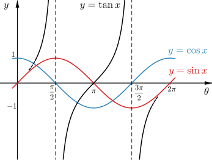
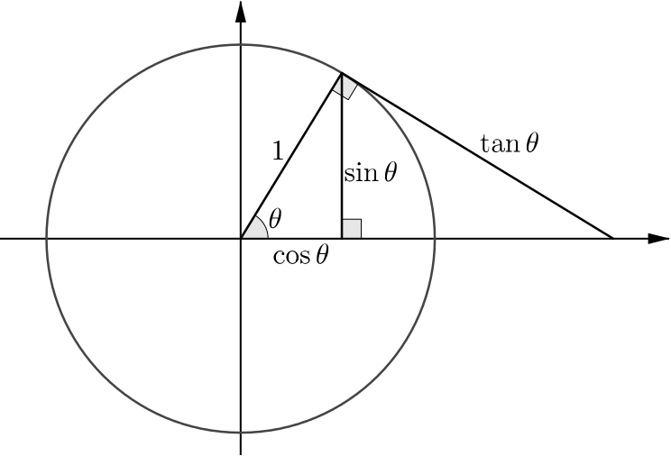
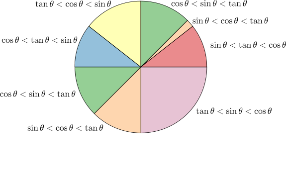

We’ve used inequalities involving sinθ, cosθ and tanθ to divide the semicircle into sectors. Each sector in the diagram is defined by a different inequality. For example, one sector is defined by the angles θ between 0 and π for which cosθ<sinθ<tanθ. Another sector is defined by cosθ<tanθ<sinθ.
Can you work out which inequality has been used to define each sector?
There are many ways to approach this problem, and we will illustrate a few of them here. If you have used different approaches, or used similar approaches but for different parts of the problem, you might find it interesting to compare the methods.
We need to think about how sinθ, cosθ and tanθ behave in relation to each other.
From the shapes and symmetries of the graphs y=sinθ, y=cosθ and y=tanθ, we can see that
the green sector is defined by cosθ<sinθ<tanθ
the yellow sector is defined by tanθ<cosθ<sinθ
the blue sector is defined by cosθ<tanθ<sinθ.

However, we may need to do a bit more work to complete the sketch graphs. For example, do the graphs y=tanθ and y=sinθ cross between θ=0 and θ=π2? Here are a couple of ways to think about this.
Can you explain why the identity tanθ≡sinθcosθ tells us the following?
For θ between 0 and π2, sinθ<tanθ.
The graphs of y=tanθ and y=sinθ only meet when θ is a multiple of π.
We can compare side lengths of triangles in the unit circle diagram to obtain inequalities relating sinθ, cosθ and tanθ.
In this way we can show that sinθ<tanθ for all values of θ between 0 and π2.
(Hint: which triangle has tanθ as its hypotenuse?)

Thinking more generally, we can also use the diagram to show the following.
For small values of θ, sinθ<tanθ<cosθ. This defines the red sector.
cosπ4=sinπ4
For θ between π4 and π2, cosθ<sinθ<tanθ, which defines the green sector, as we also saw before from the graph.
We now only need to decide which inequality defines the orange sector. You may find it helpful to look at the graphs or to visualise a point moving round the unit circle.
If we think about the behaviour of the functions as θ increases from 0, we first have sinθ<tanθ<cosθ (which defines the red sector). Another inequality must define the orange sector, and then we have cosθ<sinθ<tanθ for θ between π4 and π2, which defines the green sector.
As tanθ and cosθ are continuous between 0 and π4, there must be some value of θ between 0 and π4 where the graphs y=tanθ and y=cosθ cross over.
Therefore the inequality that defines the orange sector is sinθ<cosθ<tanθ. Why is this the only option?
Why is the boundary between the green and yellow sectors different from the boundaries between other sectors?
Which is the biggest sector?
The boundary of the orange and green sectors is at θ=π4, and therefore the green sector is larger than the red sector. However, the yellow or blue sectors may be bigger than the green sector. Here are a few ways to tackle this problem.
What is the value of the different functions at 3π4?
What are the solutions of tanθ=cosθ? Identities may help to make this into a simpler equation to solve.
Do you need to solve this equation completely to decide which sector is the largest?
It may be of interest that solutions of tanθ=cosθ are related to the golden ratio.
From the symmetry of the graphs, the angle between the boundary of the yellow and blue sectors and θ=π must be the same as the angle between θ=0 and the boundary of the red and orange sectors. In other words, the blue and red sectors are the same size. What does this tell us about the sizes of the other sectors?
If you used more than one approach, can you connect them? For example, can you connect the symmetry argument with solving tanθ=cosθ?
If you extended the diagram to make a complete circle, how many extra sectors would you need?
To complete the circle we can use similar methods to those discussed above. Another approach might be to consider the possible orderings of sinθ, cosθ and tanθ.
How many ways can the functions sinθ, cosθ and tanθ be ordered?
Which of these ways of ordering occur between θ=0 and θ=π?
Which ways might be repeated?
Will all these ways of ordering occur between θ=0 and θ=2π?
Can you explain how the behaviour of the functions gives us these sectors and inequalities?

There were many ways to approach this problem. Instead of considering all three functions at the same time, we could have considered pairs of functions.
When is sinθ<cosθ?
When is sinθ<tanθ?
When is tanθ<cosθ?
Can you see how these inequalities feature in the diagram above?